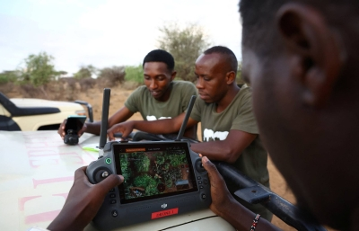
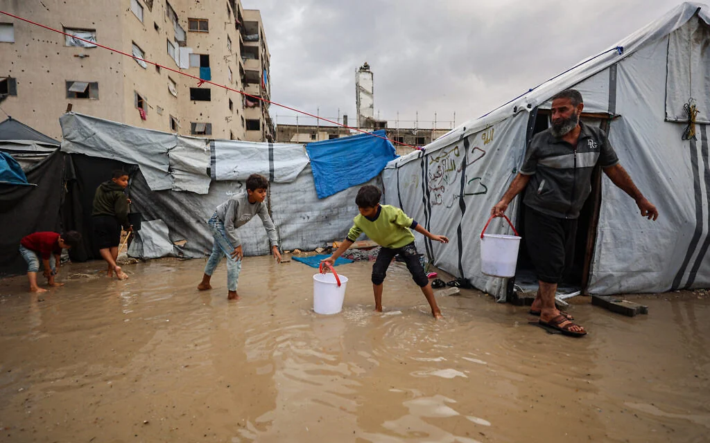

COP31 to open in Turkey, with climate goals under pressure from war and AI
A United Nations Environment Program report said the world is already set to overshoot 1.5 degrees Celsius of warming above preindustrial times.

A United Nations Environment Program report said the world is already set to overshoot 1.5 degrees Celsius of warming above preindustrial times.

Three first-time Kiwi attendees at the world's annual climate summit will explain to a global audience the everyday effects that climate change is having on their communities.

The contradiction is forcing organizations to justify their AI use in carrying out missions to combat climate change or protect natural resources.
Erin Ogunkeye is pleased to welcome Shaina Low, Communication Adviser for the Norwegian Refugee Council (NRC). Thirteen months into what she describes as a "so-called ceasefire," the humanitarian crisis in Gaza continues to deepen, exposing the profound gap between diplomatic com

Climate scientist Prof. Barış Önol told bianet following the Oct 14 floods in İstanbul, which killed seven people, that extreme rainfall would become both more frequent and more intense as a result of the climate crisis.

After storms flood thousands of tents, US-backed body faults Israel for delays in humanitarian efforts, and Hamas for refusing to disarm, warns of more setbacks to 2025 peace plan
The COP31 climate talks kicked off on Monday with an early fight over money as the UN’s chief urged world leaders to “get serious” about tackling the crisis after a year of devastating weather extremes. Antonio Guterres made his plea as thousands of participants descended on a sp
Looking for something specific? Search every story.